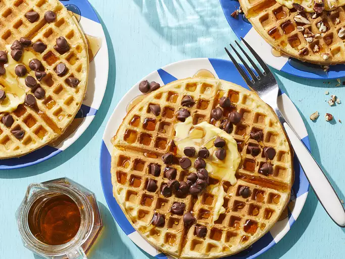

Recipe for Waffle House-Style Waffles

Waffle House waffles are thin, crispy, and golden-brown, cooked on a well-seasoned iron for that perfect crunch. They have a slightly sweet, buttery flavor with deep grid pockets that hold syrup and melted butter. Light yet sturdy, they’re served hot off the griddle, often with a side of grits or smothered in pecans. The signature crosshatch pattern gives them a classic diner look, and their simplicity makes them a beloved comfort food. Pair them with a cup of black coffee for the full experience.
Ingredients
- 1 ½ cups flour
- 2 tablespoons cornstarch
- 1 teaspoon salt
- ½ teaspoon baking powder
- ½ teaspoon baking soda
- 1 large egg
- ¼ cup sugar
- ¼ cup salted butter, softened, plus more for serving
- 1 teaspoon vanilla extract
- 1 cup half-and-half
- ½ cup buttermilk
- cooking spray
- pure maple syrup, and/or chocolate chips, for serving
Steps
- Whisk together flour, cornstarch, salt, baking powder, and baking soda in a bowl.
- Whisk together egg, sugar, butter, and vanilla in a separate large bowl until mixture is smooth. Whisk in half-and-half and buttermilk. Add flour mixture; stir until just combined and a few lumps remain. (Do not overmix.) Chill, covered, at least 1 hour or up to overnight.
- Preheat waffle iron to medium-high; lightly coat with cooking spray. Pour about 2/3 cup batter onto waffle iron. Cook until golden and crisp on edges, 4 to 6 minutes. Transfer to a plate; keep warm. Repeat with remaining batter.
- Serve waffles with maple syrup, chocolate chips, and/or additional butter.
Home